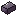

Ingredients & Modifiers
Every forge ingredient (ingots, heartwood, hides) and forge modifier - what each one does to a forged piece and where it drops.
Everything that goes into the forge is either an ingredient (the metal, wood and hides a pattern needs) or a modifier (gems and other extras that shape the piece). Their tooltips list what they do. Ingredients and gems come in three tiers: ✦, ✦✦ and ✦✦✦. The gold pips sit in the top-left corner of the icon.

How tiers work
- Higher-tier ingredients add gem rolls (the piece's ingredients' average tier: +1 try per tier above ✦) and a bigger wood and hide bonus.
- Combine: 9 of a ✦ ingredient or gem make 1 ✦✦, and 9 ✦✦ make 1 ✦✦✦. Use the [Combine] button at the forge or at Brenna.
- Most drops get their tier from your level in the stat that finds them (or the monster's level): ✦ from level 1, ✦✦ from 15, ✦✦✦ from 30, and one tier higher 5% of the time. Mining and Logging work differently (below).
Ingots
| Ingredient | From | Mastery | Affix slots | Gem rolls (best of) |
|---|---|---|---|---|
| Copper Ingot | copper ore | Common | 2 | 1 |
| Iron Ingot | iron ore | Uncommon | 3 | 2 |
| Gold Ingot | gold ore, nether gold ore | Rare | 4 | 3 |
| Diamond | diamond ore | Mythic | 5 | 4 |
| Netherite Ingot | ancient debris | Legendary | 6 | 5 |
Deepslate ores count too. An ingot's tooltip shows its gem rolls at its own tier: each tier above ✦ adds one.
Heartwood
Each wood adds one stat to the piece. The most-used wood in a piece gives its bonus (free, no affix slot), at a range set by the woods' average tier:
| Ingredient | From | Stat | ✦ | ✦✦ | ✦✦✦ |
|---|---|---|---|---|---|
| Oak Heartwood | oak logs | Arcana | +1 to +2 | +2 to +3 | +3 to +4 |
| Birch Heartwood | birch and cherry logs | Ferocity | +1 to +2 | +2 to +4 | +4 to +5 |
| Spruce Heartwood | spruce logs | Precision | +1 to +3 | +3 to +5 | +5 to +8 |
| Dark Oak Heartwood | dark oak, mangrove logs, crimson stems | Might | +1 to +2 | +2 to +3 | +3 to +4 |
| Jungle Heartwood | jungle logs, warped stems | Swiftness | +1 to +2 | +2 to +3 | +3 to +4 |
| Acacia Heartwood | acacia logs | Fortitude | +1 to +2 | +2 to +3 | +3 to +4 |
Hides
The most-used hide in a piece also gives its stat, the same way:
| Ingredient | From | Stat | ✦ | ✦✦ | ✦✦✦ |
|---|---|---|---|---|---|
| Leather Hide | killing livestock (tier by your Farming level) | Vitality | +1 to +2 | +2 to +4 | +4 to +5 |
| Scaled Hide | fishing (tier by your Fishing level) | Fortune | +1 to +2 | +2 to +3 | +3 to +4 |
| Chitin | spiders and cave spiders, 15% (tier by their level) | Toughness | +1 to +2 | +2 to +3 | +3 to +4 |
| Mire Hide | monsters of the Drowned Barrow and Mirelings, 15% (tier by their level) | Steadfast | +1 to +2 | +2 to +4 | +4 to +5 |
Gathering chances
- Each gather (an ore, a log, a catch, a livestock kill) has a (your level ÷ 4)% chance of an ingredient: at least 1%, at most 12%. The Blacksmithing passive Keen Eye makes that 50% more often.
- Mining and Logging: that roll always gives a ✦. On top of it, each block has its own 0.5% per level chance of a ✦✦, and separately of a ✦✦✦. A level 20 miner gets a 10% chance of each per ore.
- Fishing and livestock use the normal tier rule (✦ / ✦✦ from 15 / ✦✦✦ from 30).
- The Prospector Dust and Heartring armour modifiers (below) raise the find chances for Mining and Logging, and Brine Pearl raises Scaled Hide finds from fishing.
Gems
Ten gems, one per combat stat: Ruby (Might), Garnet (Vitality), Amber (Ferocity), Jade (Precision), Moonstone (Arcana), Opal (Fortitude), Onyx (Toughness), Sapphire (Swiftness), Aquamarine (Steadfast) and Topaz (Fortune). Each becomes an affix of its stat. Their ranges per tier are on the gems page. They come from mining (see below).
Modifiers

Up to 6 modifiers go into a piece (7 with Legend Smith). Each can burn away when you forge (15%) unless you have Careful Hands. Modifiers marked once can only go into a piece one at a time. Effects that work "while held / worn" act on the piece while it's in your hand or worn. The attribute ones don't stack across pieces.
From Normal monsters
| Modifier | Goes into | Effect |
|---|---|---|
| Bone Dust (once) | any piece | Its lowest gem affix goes to the top of its range. |
| Sinew | weapons and bows | +2 Ferocity (attack speed, a faster draw). |
| Tallow | armour | You burn for half as long. |
| Coarse Grit | any piece | +1 to every gem affix. |
| Hide Scrap | any piece | Counts as one hide of any kind in the pattern. |
From Magic monsters
| Modifier | Goes into | Effect |
|---|---|---|
| Void Pearl | any piece | +1 socket. |
| Blaze Heart | weapons | Hits set the target on fire for 3s. |
| Frost Shard | weapons | Hits slow the target for 2s. |
| Venom Gland | weapons | Hits poison the target for 3s. |
| Phantom Weave | boots and bows | +3 Swiftness. |
| Storm Quill | bows | Arrows fly 15% faster. |
| Ember Glass | armour | Fire resistance for 3s when you're set alight (20s cooldown). |
Magic monsters also drop Bone Dust, Sinew and Tallow.
From Rare monsters
| Modifier | Goes into | Effect |
|---|---|---|
| Amethyst Cluster (once) | any piece | +1 affix slot. |
| Shulker Plate (once) | any piece | +2 sockets, -3 to every gem affix. |
| Ironbark Resin | armour | +3 Fortitude. |
| Lifeblood Vial | weapons | Kills heal you 2 hearts. |
| Hunters Eye | bows | +6 Precision. |
| Echo Shard (once) | any piece | Every gem affix rolls 3 more times and keeps the best. |
| Mirror Scale | armour | A monster that hits you takes 3 damage back. |
| Quicksilver | any piece | Weapons: +4% attack speed. Armour: +2% move speed. |
Rare monsters also drop Void Pearl, Blaze Heart, Frost Shard, Venom Gland and Phantom Weave.
From Champions and Reverbs
| Modifier | Goes into | Effect |
|---|---|---|
| Star Shard (once) | any piece | It comes out one rarity above your mastery. |
| Skill Socket Stone (once) | any piece | One skill socket for a skill gem. It's the only way to get one below Extraordinary. |
| Titan Core | armour | +4 max health on top of its affixes. |
| Dragon Scale | armour | +1 armour toughness on top of its affixes. |
| Wraith Essence | weapons | Every 4th hit heals you 2 hearts. |
| Gilded Thread | any piece | +3 Fortune. |
| Reverb Echo (once) | any piece | Its highest gem affix echoes: +50%. |
Champions and Reverbs also drop Shulker Plate, Lifeblood Vial and Echo Shard.
From bosses
| Modifier | Goes into | Effect |
|---|---|---|
| Heart of the Fallen (once) | any piece | +2 to every gem affix and +1 affix slot. |
| Ancient Sigil (once) | any piece | Needs no mastery for its metal. A Common smith can forge netherite with it. |
| Void Crown Fragment (once) | helmets | +1 skill socket and +3 Arcana. |
Bosses also drop Star Shards and Skill Socket Stones.
Gathering-set modifiers
Three kinds of monster drop armour modifiers for gatherers: the Hollowed Delvers, the Fellkin and the Brinegill. Each kill has an 8% chance of one of its kind's four (12% with Salvager), with the tier set by the monster's level. These add up piece by piece across your armour. There's no set bonus.
| Modifier | From | ✦ / ✦✦ / ✦✦✦ |
|---|---|---|
| Lamp Oil | Hollowed Delvers | +5 / 10 / 15% mining speed while you hold a pickaxe |
| Vein Salt | Hollowed Delvers | +3 / 6 / 9% chance of an extra ore |
| Prospector Dust | Hollowed Delvers | +10 / 15 / 20% ingredient, gem and modifier finds from mining |
| Tally Chalk | Hollowed Delvers | +10 / 20 / 30% Mining XP |
| Fellkin Sap | the Fellkin | +5 / 10 / 15% chopping speed while you hold an axe |
| Twin Knot | the Fellkin | +3 / 6 / 9% double log chance |
| Heartring | the Fellkin | +10 / 20 / 30% heartwood finds |
| Bark Rune | the Fellkin | +10 / 20 / 30% Logging XP |
| Bait Roe | the Brinegill | +3 / 6 / 9% double catch chance |
| Brine Pearl | the Brinegill | +10 / 20 / 30% Scaled Hide finds from fishing |
| Tide Scale | the Brinegill | +10 / 20 / 30% Fishing XP |
| Snarled Line | the Brinegill | +2 / 4 / 6% chance of a treasure catch with every catch |
Where modifiers drop
From monsters, on top of their normal loot. The modifier comes from the pool of the monster's rank (the tables above):
| Monster | Chance of a modifier |
|---|---|
| Normal | 1.5% |
| Magic | 6% |
| Rare | 25% |
| Champion / Reverb | always, plus a 50% chance of a second one from the Rare pool |
| Boss | one from the boss pool, one Champion-pool and one Rare-pool modifier |
The Blacksmithing passive Salvager makes monster drops 50% more common.
From mining:
- Each ore (including coal, redstone, lapis, emerald and quartz) has a 2.5% chance of one of: any gem, Ember Glass, Amethyst Cluster, Quicksilver or Gilded Thread.
- Each stone-type block has a 0.3% chance of one of: any gem, Coarse Grit, Amethyst Cluster or Echo Shard.
- The tier follows your Mining level. The Mining passive Gem Sense makes these finds half again as common, and Prospector Dust adds its %.
Modifiers that work on affixes (the gems and the ones that change gem rolls, slots or stats) come up a little more often than the rest.
Other sources:
- Brenna Ironhand sells six random material rows each day: ingredients, a Normal-pool and a Magic-pool modifier, and either a Rare-pool modifier or a ✦✦ mining find.
- Quests pay forge rewards. Kill quests pay a modifier from the pool their monsters drop from, gathering quests pay the ingredient of their trade, and crafting quests pay ingots or heartwood and Blacksmithing XP. Repeatable quests pay a random-tier ingredient and sometimes a modifier.